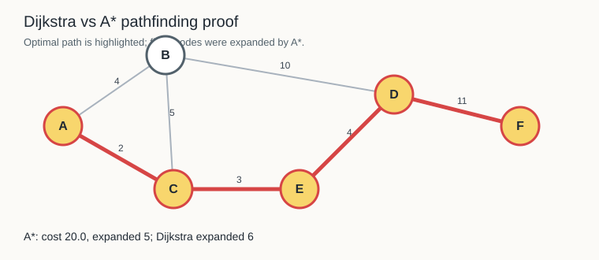
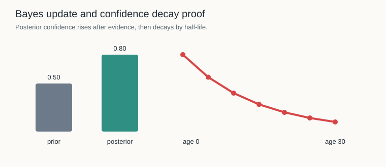

Fixture-only artifacts. These reports are advisory lab evidence and write no runtime truth.
A*: cost 20.0, expanded 5; Dijkstra expanded 6.

Machine report: pathfinding-proof.json, quick image: pathfinding-proof.png
Prior 0.50, posterior 0.80. Confidence then decays by half-life.

Machine report: bayes-confidence-proof.json, quick image: bayes-confidence-proof.png